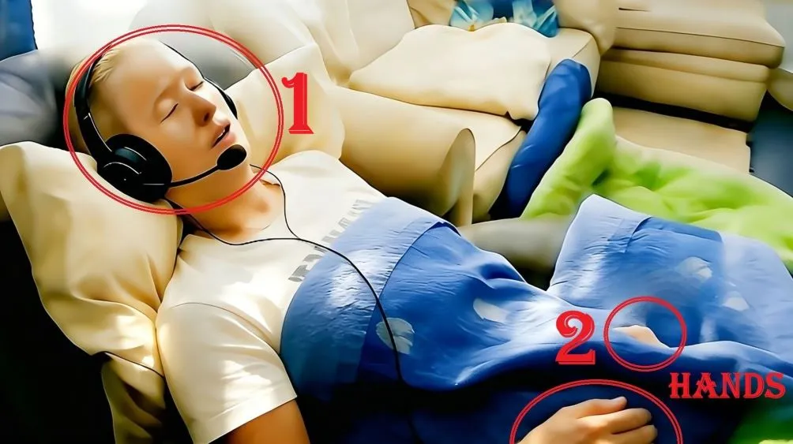
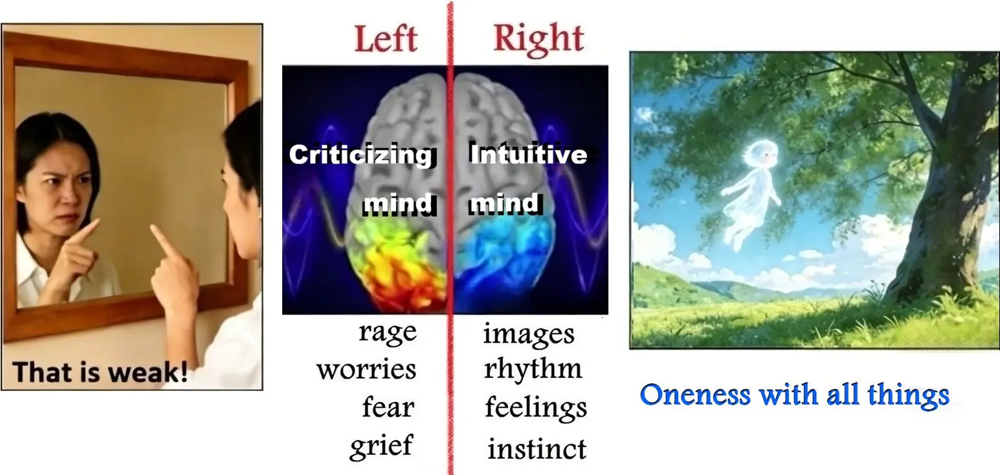
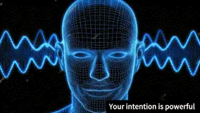
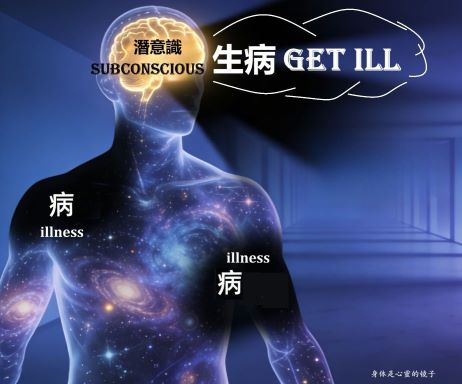
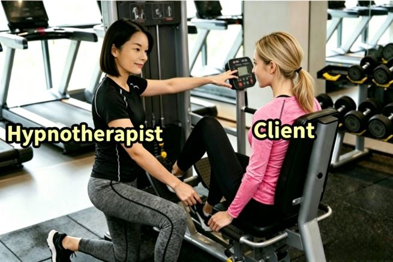

Sink into deep relaxation & Tap into your deeper subconscious
Session held via Zoom; no commute required.
Experience personalized holistic healing designed exclusively for you, all from the comfort of your own room.
Reduce Anxiety & Improve Sleep
Release Harmful Habits & Repeating Patterns
Talk to Your Cells and Restore Inner Balance
Discover Life Purpose ; What hidden talents have I never put to use?
Past-life Regression & Cosmic Insights
Under deep hypnosis and profound relaxation, your voice may become extremely soft. Please keep the microphone close to your mouth at all times.
Ensure your full face and both hands are clearly visible on camera.

In daily life, the left brain governs rational logic and critical judgment, yet its state often shifts with emotional fluctuations.
Meanwhile, the intuitive wisdom of the right brain is constantly suppressed by the left brain.
Over time, you gradually tune out the voice of your right brain — the voice of your subconscious.

Hypnosis gently calms the left brain, eases overactive analytical defenses,
and allows the suppressed wisdom of the right brain to emerge—
reconnecting you with your inner power and your multidimensional true self.
Nikola Tesla said: Everything in the universe is energy, frequency, and vibration.
Brainwaves and intentions are energetic frequencies.
Your subconscious thoughts are heard and faithfully mirrored by every cell in your body.


When a child claims to have a fever in order to avoid school, their body temperature will indeed rise.
When a doctor prescribes vitamins you believe to be powerful medicine, you truly recover.
Your entire body is a universe, and you are the god of this universe.
Every cell in your body deeply loves you and unconditionally obeys your every command.
The Power of Subconscious
A woman and her husband had grown apart and become complete strangers.
After being diagnosed with cancer, she discovered a profound truth during psychological counseling:
her subconscious was unwilling to let her illness go.
Only when she fell ill would her husband set aside their differences,
accompany her to medical appointments, and exchange a few words with her.
This long-missed interaction became the comfort her subconscious clung to.
Yet this "subconscious" desire completely contradicted her "conscious" mind.
When this truth emerged, her conscious mind instantly fell apart.
She ranted furiously: "Are you out of your mind?! Who would NOT want to recover?!!!!!"
Ready to dive into your subconscious?
My Services · One-shot Holistic Healing, No Multiple Sessions required
1. 1~2 hours face-to-face consultation via Computer/Laptop:
Understanding your emotional blocks, intended goals, and questions you wish to resolve.
2. 1~2 hours Guided Hypnosis:
Entering a subconscious state, accessing inner wisdom to explore root causes and solutions.
3. Review & Summary:
Integrating insights to empower you on your true path.
Who It’s For | Test Your Imagination First
Look closely at the image below.
Immerse yourself in this old house and stay with it for a moment.
Notice the emotions that arise within you,
and try to describe your intuitive impressions and observations.
Take note of this feeling and your intuitive impressions.
Then scroll down to see which of the 3 case examples below best describes you.
I see an old house. There’s a stove, some furniture, and tableware set on the table.
Hypnotist: Is that all?
Client 1: Hmm~~ There's also an overturned chair on the floor.
I think that's about all.
Oh! Wait, there's a water wheel outside the door.
Client 2:
I'm standing inside an old house.
The floor appears to be stone, with wooden beams across the ceiling, and some ornaments on the walls.
The room is simply furnished, and there're some tableware and a cup on the table.
Something’s cooking—potato and vegetable stew, I believe.
An overturned chair lies on the floor, as if someone rushed out in a hurry and knocked it over.
A wooden water wheel stands just outside the door.
Hypnotist: Do you notice anything else? Can you share a little more?
Client 2: The sun has just risen,
and golden sunlight fills the room.
I feel warm and safe.
Client 3:
I'm inside my grandpa's old country house.
It’s autumn, and I’ve just arrived.
Beef stew is simmering over the fire, and it smells so good!
We’re about to set the table for dinner when we hear a cow cry out in pain.
Grandpa hurries out to check on her, knocking over a chair in his rush.
Hypnotist: Where is the cow?
Client 3: She's in a small shed next to the house.
It looks like she's about to give birth.
I actually remember this cow — her name was Daisy.
It feels so good to be back in the countryside.
I really miss country life, and I miss grandpa more than anything.
Client 3 might also say:
Little elves come in to make clothes and shoes
I'm an old woman living here all by myself
This house belongs to a giant
It's a set from a movie
✔ If you relate to Client 3, you are highly suited for hypnosis.
✔ If you’re more like Client 2, you can still enter the state as long as you relax and allow your left-brain conscious mind to quiet down.
✔ Client 1 types may find it harder to enter the θ brainwave state needed for hypnosis. Regular meditation will help with this.
Remember, imagination is the language of your subconscious mind.
We Are a Team · Your Full Commitment is Essential
Take the analogy of a fitness trainer and client:
you must be willing to follow instructions and put in the effort.
If the trainer asks for 10 push-ups, you need to commit fully and follow through.
Without your willingness to act, even the most skilled trainer cannot help you reach your goals.

Similarly, to achieve a theta (θ) brainwave state, you must follow my instructions during hypnotic induction and stay deeply immersed.
Note: The theta (θ) brainwave state naturally occurs twice a day.
(1) Before falling asleep: you remain awake, your body growing heavy and deeply relaxed, and your left brain settles into quiet calm.
(2) Upon soft waking: you rouse at the edge of sleep, your body feeling heavy and sluggish, and your left brain stays quiet and unoccupied.
Many people, having heard or read about extraordinary experiences in quantum hypnosis,
develop heightened anticipation for their own sessions.
They are like children perched on a wall, eagerly awaiting something exciting to unfold.
Try not to hold excessive expectations, as it activates your left brain, keeping you from truly calming down.
Let your criticizing mind sit down and chill, and listen to what your subconscious has to say.
Your Pre-Session Preparation
Make a list : Take time to reflect on everything in life you wish to find answers to.
Write them down, and we will review this list together during your consultation.
Family of Origin
Love and Marriage
Children, Pets, Friends, Neighbors
Job and Business
Religion and Life Path
Supernatural and Unexplained phenomena
Setting :
Find a quiet space where you will not be disturbed for 4+ consecutive hours
Test your webcam, headphones, and microphone — the microphone MUST be placed close to your mouth
Wear loose, comfortable clothing; no makeup
Have a light meal before your session. A quiet walk beforehand will help you get ready for a rewarding session.
If possible, avoid alcoholic or caffeinated beveragoron on the day of your session, or even, the evening before. (Just reduce your caffeine intake if you’re a regular coffee/tea drinker.)
Have blank paper and a pen ready
Payment · Full Advance Payment
USD 329 via Paypal
Once payment is made, you may schedule your appointment.
About Me · Hypnotherapist
Certified in NLP (Neuro-Linguistic Programming) Essentials